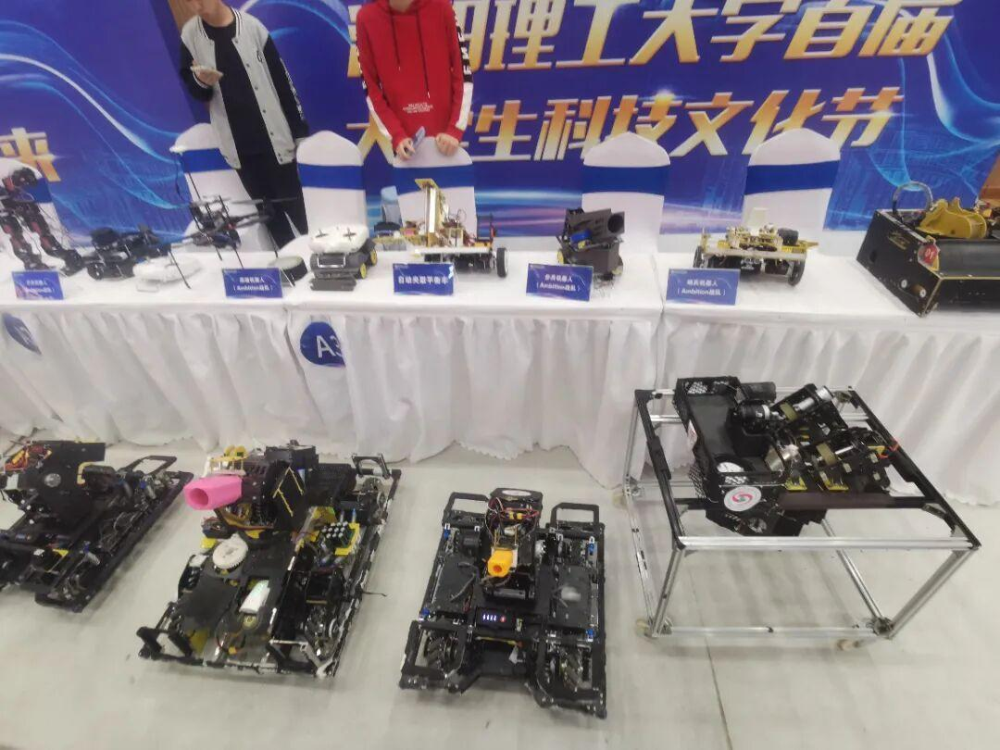
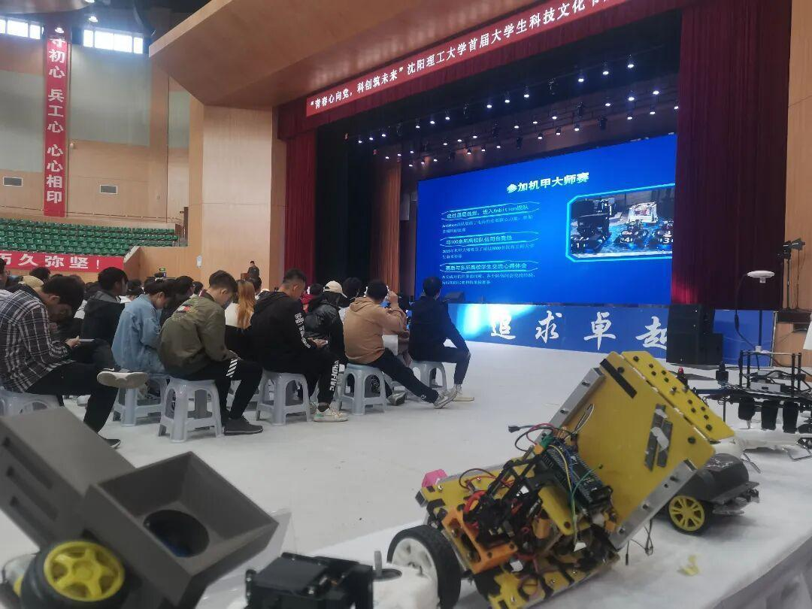
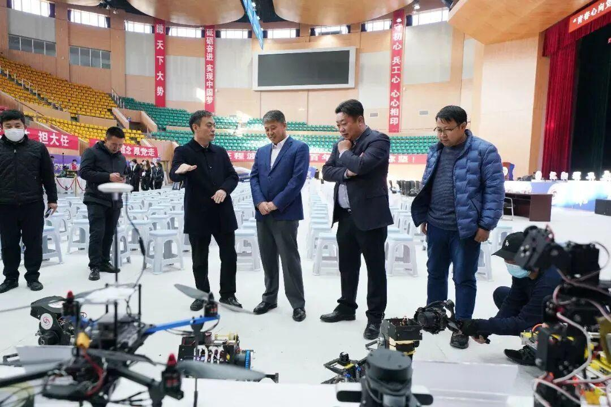

科技文化节-Ambition战队在线
金风送爽，丹枫迎秋
思维的火花不断碰撞
创新的灵感时时迸发
沈理工校园
刮起一阵蓝色的“科技风”
而Ambition战队也在这股“科技风”中大放异彩

“青春心向党，科创筑未来”沈阳理工大学首届大学生科技文化节启动仪式于10月28日在艺帆馆E馆圆满举办。
Ambition战队展示了RoboMaster超级对抗赛上比赛上取得优秀成绩的步兵机器人，哨兵机器人等。在科技文化节上展示了我们战队的风采。

图上是高航学长，从18年加入Ambition战队最初负责与电控相关的工作，之后又转去硬件帮忙,现任步兵操作手。他在讲台上发表了精彩的演讲。他讲述了自己自入学以来参加的各种科技竞赛和自己在Ambition战队的收获与成长，并且充分总结经验，让观众们受益匪浅。


Ambition战队在科技文化节中释放光彩。启动仪式结束后，与会领导嘉宾参观了Ambition战队机器人，并且大加赞赏。

文章部分内容转载自沈阳理工大学共青团
排版|苗力文